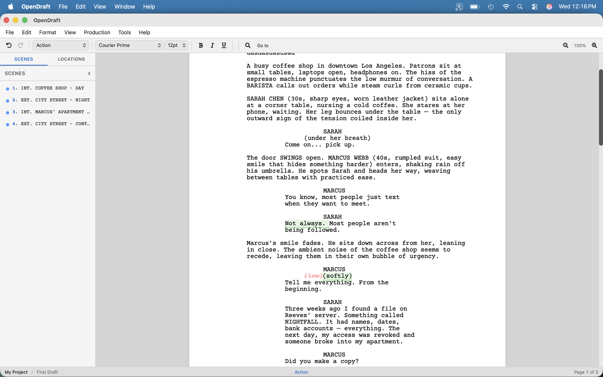

Revision Mode & Track Changes
Mark production revisions with margin asterisks, and compare script versions visually.
Revision Mode
Revision Mode is a production tool for a script that has already gone out to cast and crew. While it is on, every change you make is marked, so the next draft shows exactly what changed. Turn it on with Tools > Production > Revision Mode.
What gets marked
- Text you type or paste is marked in the current revision color, and an asterisk (*) appears in the right margin beside every line it is on.
- A line you shortened, joined, split or changed to another element has no new text to mark, so the line itself gets an asterisk.
- Undo and redo take the marks with the text. Edits from collaborators are marked on their side, not yours. Pagination, scene renumbering and automatic CONT'D never count as revisions.
- With Revision Mode off, nothing new is marked. Marks already in the script stay until you clear them.
Revision colors
Each round of revisions traditionally goes out on a new color of paper: White, Blue, Pink, Yellow, Green, Goldenrod, Buff, Salmon, Cherry, then the second round of Blue, Pink, Yellow and Green.
- Tools > Production > Revision Color picks the color new edits are marked in.
- Tools > Production > Next Revision Color starts the next round in the sequence and turns Revision Mode on.
- Tools > Production > Show Revision Colors shows revised text in its round's color on screen, so you can tell the rounds apart. It never changes what prints.
- The
{revision}field in a header or footer prints the current color.
Choosing the mark
Tools > Production > Revision Settings… sets the character printed beside a revised line. It is an asterisk unless you change it.
- Revision mark — one character for every revision, such as
*,+or#. - Mark for each revision — give a round a mark of its own, so a page carrying Blue and Pink changes shows which is which. Leave a round blank to use the main mark. A line changed in two rounds shows the later round’s mark.
- The marks are saved with the script and shared with collaborators. They are used on screen, in PDF and Print, and in every format that carries revisions.
Colored pages and revised pages only
- Print revised pages on colored paper (in Revision Settings) tints each revised page in the PDF and in Print with its revision’s color, so the pages can be told apart without colored stock. A page carrying more than one round takes the latest round’s color. Unrevised pages stay white.
- File > Export > PDF (Revised Pages Only) writes just the pages that carry a revision mark: the pages that go out to cast and crew between full drafts. With pages locked they keep their locked numbers, such as 12 and 12A.
- Both work from the PDF that Print also uses. If you have turned off Print the PDF in Settings > Printing, the browser’s own print shows the marks but not the colored pages.
Locked pages
Once a script has gone out, everyone refers to its page numbers. Tools > Production > Lock Pages fixes every page where it is now. After that:
- Text added to a page spills onto an A page instead of pushing everything along: page 12 overflows onto 12A, then 12B. Page 13 still starts where it did.
- Text added above page 1 goes onto A1, B1 and so on.
- A page whose text is all deleted is absorbed into the page before it, which is then numbered for both, such as 12-13. If page 12 has overflowed meanwhile, the overflow takes the number 13 back instead of becoming 12A.
- The page labels appear in the header and footer (
{page}), in the status bar, on the Navigator’s page thumbnails, and in the PDF. - Unlock Pages numbers the pages straight through again.
Locking is saved with the script and shared with collaborators. An older version of OpenDraft opens a locked script with its pages numbered straight through. Word lays out its own pages, so a Word export is not locked.
Locked scene numbers and OMITTED scenes
With Lock Scene Numbers on, every scene keeps its number for good:
- A scene added after scene 12 is 12A, then 12B. A scene added before scene 1 is A1.
- A scene heading copied, pasted or split in two never duplicates a number. The scene that had the number first keeps it, and the other is numbered as a new scene.
- Hiding scene numbers only hides them. The locked numbers stay on the scenes and come back when you show them again.
- Tools > Production > Omit Scene cuts the scene the cursor is in but keeps its heading, which then reads OMITTED with its number. The numbers around it never move. It is one edit, so Edit > Undo brings the scene back. In Revision Mode it is marked like any other change.
Clearing marks
When a new full draft goes out, Tools > Production > Clear Revision Marks… removes every mark and asterisk. The text is not changed, and Edit > Undo brings the marks back.
Saved, shared and exported
- Revision Mode, its color and the marks are saved with the script and come back when you reopen it.
- In a collaboration session, everyone works with the same Revision Mode setting and color.
- PDF and Print put an asterisk in the right margin of every revised line, inside AV tables too.
- An older version of OpenDraft still opens a revised script; it shows no asterisks, and saving it there drops them.
- Final Draft (.fdx) export writes each revised run's revision, and the list of revision colors with each one’s mark. Importing an .fdx reads them back: the revised text, which revision it belongs to, Revision Mode, the current color and the marks. A Final Draft revision is matched to an OpenDraft color by its name (“Blue Rev.”), then by its page color, then by its place in the list.
- Importing an .fdx whose scene numbers are production numbers (an A-number such as 12A, or a gap left by a cut scene) shows them and locks them, so opening the script does not renumber it. Plain 1, 2, 3 numbering is left to your own scene-number settings, as before.
- If Final Draft was set to show only the current revision, only that revision’s marks come in.
- Word (.docx) puts the mark in the right margin of each revised paragraph. Word wraps the lines itself, so the mark is on the paragraph’s last line rather than on every line.
- Fountain has no revisions, and a bare
*at the end of a line would stop a transition or scene number being recognised. Each revised element ends with a Fountain note carrying the mark and the revision, such asCUT TO: [[* Blue revision]]. Apps that show notes show the mark, and OpenDraft reads it back as the revision. Your own notes are never mistaken for one. - Fade In (.fadein, .osf) gets Fade In’s own revision table, with each revision’s mark, and a mark on each revised paragraph. Importing reads them back.
Track Changes
Track Changes compares your current script against a previously checked-in version, showing what has changed inline:
- Green highlighted text — New text that was added
- Red strikethrough text — Text that was deleted
Viewing Track Changes
- Go to File > Versions > Track Changes Since Last Check-In to compare against your most recent check-in.
- Or go to File > Versions > Compare with Version to choose a specific version to compare against.
- The editor shows inline diff highlighting. Additions appear in green, deletions in red strikethrough.
- You can continue editing while viewing changes.

How the Diff Works
Track Changes uses a sophisticated word-level diff algorithm:
- It compares at the block level (each screenplay element is a block) and then at the word level within changed blocks.
- Unchanged blocks are shown as-is.
- Changed blocks show exactly which words were added, removed, or changed.
Comparing Versions
To compare any two versions of your script:
- Make sure you have at least one checked-in version (via File > Versions > Check In).
- Use File > Versions > Compare with Version and select the version to compare against.
- The diff view shows all changes between that version and your current script.
Tip: Check in your script before sending it for review. When you get feedback, make your changes, then use Track Changes to see exactly what you've modified before sharing the new version.